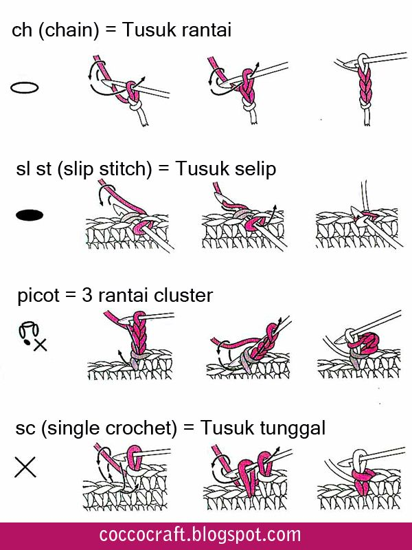
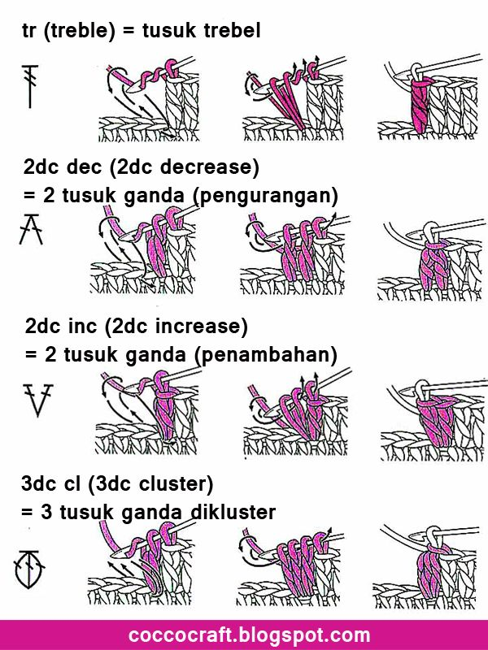
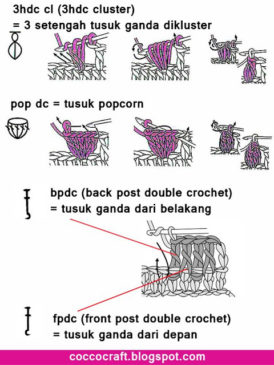
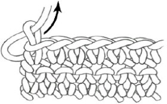

Tenik Dasar

Teknik Dasar Merajut – Setelah sebelumnya kalian sudah mempelajari tentang Kerajinan Rajut. Pastikan kalian memahami dulu tentang dasar kerajinan rajut dan hal apa saja yang perlu dipersiapkan untuk memulai membuat kerajinan rajut. Dalam artikel ini akan dibahas lebih ke arah teknik-teknik yang bisa kalian gunakan untuk merajut. Kalian juga bisa mencobanya agar lebih memahami dengan baik. Namun sebelum kalian belajar tentang teknik dasar merajut, ingat baik-baik istilah berikut :
<

Jika kalian sudah memahami istilah-istilah di atas, kalian bisa mempelajari tahap selanjutnya. Jika kalian mau mencoba secara langsung teknik dasar merajut berikut, kalian harus menyiapkan alatnya dulu. Alat yang perlu disiapkan yaitu minimal 1 hakpen, 1 gunting dan benang rajut secukupnya. Setelah kalian menyiapkan semuanya, kamu bisa mencoba salah satu dari teknik dasar merajut berikut :
Macam-macam Teknik Dasar Merajut (crochet)
Teknik pertama
<
2sc decrease (2sc dec) = 2 tusuk tunggal (pengurangan)
Metode ini digunakan untuk mengurangi atau menjadikan 2 lubang stitch menjadi 1 stitch.
1. Membuat 2 sc (tusuk tunggal)
2. Gabung menjadi satu stitch.
2sc increase (2sc inc) = 2 tusuk tunggal (penambahan)
Metode ini digunakan untuk menambahkan atau menjadikan 1 lubang stitch menjadi 2 stitch.
1. Membuat 2sc (tusuk tunggal) dalam satu lubang stitch.
Half double crochet (hdc) = setengah tusuk ganda/ tusuk dobel.
1. Buat rangkain ch (rantai), lalu tambahkan 2ch. Kait benang, dan tusukkan jarum pada ch kedua dari jarum.
2. Kait benang, tarik keluar sehingga pada jarum terdapat 3 lilitan benang.
3. Kait benang sekali lagi, lalu tarik keluar sekaligus. Sehingga tersisa satu lilitan benang pada jarum hakpen.
Double crochet (dc) = tusuk ganda/ tusuk dobel
1. Buat rangkain ch (rantai). Tambahkan 3 ch lagi, kait benang. Tusukkan jarum hakpen pada ch ke-4 dari jarum.
2. Kait benang, tarik keluar jarum hakpen, sehingga terdapat 3 lilitan di jarum.
3. Kait benang lagi, lali tarik sampai tersisa 2 lilitan.
4. Kait benang lagi, lalu tarik sehingga tersisa 1 lilitan.
Teknik ketiga

Treble (tr) = tusuk trebel
1. Buat 4 ch (rantai). Kait benang 2 kali, lalu tusukkan jarum hakpen pada rantai ke-5 dari hakpen.
2. Kait benang, tarik jarum keluar sehingga tersisa 4 lilitan benang.
3. Kait benang lagi, tarik jarum keluar sehingga tersisa 3 lilitan benang.
4. Kait benang lagi, tarik jarum keluar sehingga tersisa 2 lilitan benang.
5. Ulangi sampai tersisa 1 lilitan benang pada jarum hakpen.
2dc decrease (2dc dec) = 2 tusuk ganda (pengurangan)
Metode ini digunakan untuk mengurangi jumlah tusukan.
1. Buat 2 tusuk ganda pada 2 lubang stitch.
2. Gabung semuanya menjadi satu
2dc increase (2dc inc) = 2 tusuk ganda (penambahan)
Metode ini digunakan untuk menambahkan jumlah tusukan.
1. Buat 2 tusuk ganda pada satu lubang stitch (dari 1 lubang menjadi 2 lubang stitch)
3dc cluster (3dc cl) = 3 tusuk ganda dikluster
1. Buat 3 tusuk ganda dalam 1 lubang stitch (tusuk ganda setengah jadi, atau belum ditutup dengan kaitan akhir).
2. Kait benang dan tutup 3dc tersebut dengan satu tarikan benang.
3. Sehingga dari 3dc tergabung menjadi 1 stitch (dalam satu lubang stitch).
Teknik keempat
<
3hdc cluster (3hdc cl) = 3 setengah tusuk ganda dikluster
1. Buat 3hdc setengah jadi (belum ditutup dengan kaitan akhir) dalam satu lubang stitch.
2. Kait benang, dan tarik keluar benang melewati 3hdc tersebut.
3. Kait benang lagi, dan tarik benang keluar, sehingga tersisa 1 kaitan pada jarum hakpen.
Pop double crochet (pop dc) = tusuk popcorn
1. Buat 5dc (tusuk ganda) dalam satu lubang tusukan.
2. Kait benang dan keluarkan, sehingga semua (5dc) tersebut tergabung menjadi satu stitch.
Back post double crochet (bpdc) = tusuk ganda dari belakang
Membuat tusuk ganda dengan mengaitkan pada bagian belakang tusuk ganda yang ada dibawahnya (tidak ditusukkan pada lubang, tapi dikaitkan pada atas dc yang berada dibawahnya).
Front post double crochet (fpdc) = tusuk ganda dari belakang
Membuat tusuk ganda dengan mengaitkan pada bagian depan tusuk ganda (dc) yang ada dibawahnya. Hampir sama dengan bpdc, tapi pengerjaannya dari depan.
Mematikan Benang (Finishing)

Ketika selesai membuat sebuah rajutan, langkah terakhir yaitu mengikat benang dan memastikan ikatannya kuat dan tidak terbuka.
1. Potong benang beberapa centimeter.
2. Kaitkan sisa benang tersebut.
3. Tarik sisa benang melalui lubang dengan bantuan jarum hakken seperti pada gambar di atas.
Itu tadi beberapa teknik dasar merajut yang perlu diketahui untuk membuat sebuah kerajinan rajut. Kalian bisa kombinasikan beberapa teknik di atas untuk membuat bentuk yang kalian inginkan tergantung kebutuhan.
Untuk mengetahui tentang dasar kerajinan rajut bisa klik link : Kerajinan Rajut.
Untuk lebih jelas saat mencoba teknik dasar merajut kalian bisa simak video di link berikut : Tutorial Membuat Bros Rajut Bunga ft Zaqia Crochet and Craft.
Kami Percaya bahwa Orang Indonesia Memiliki Kreativitas untuk Membuat Karya yang Berkualitas.
Tetap Belajar, Terus Berkarya dan Selalu Bersinergi.
Mariberkarya, Ini Karya Kita
Sumber : https://blog.mariberkarya.com/teknik-dasar-merajut/